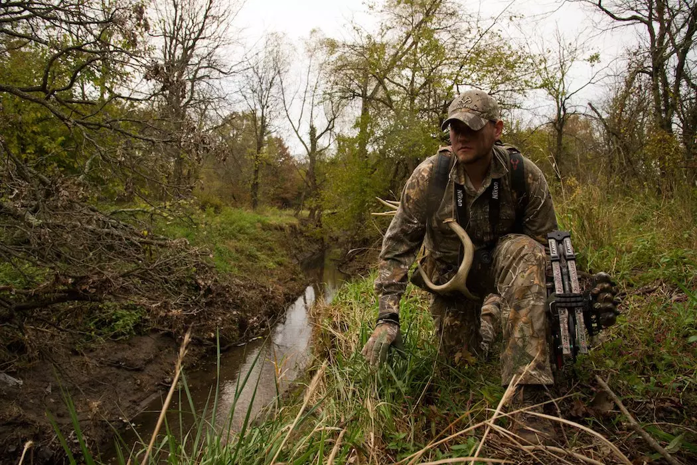
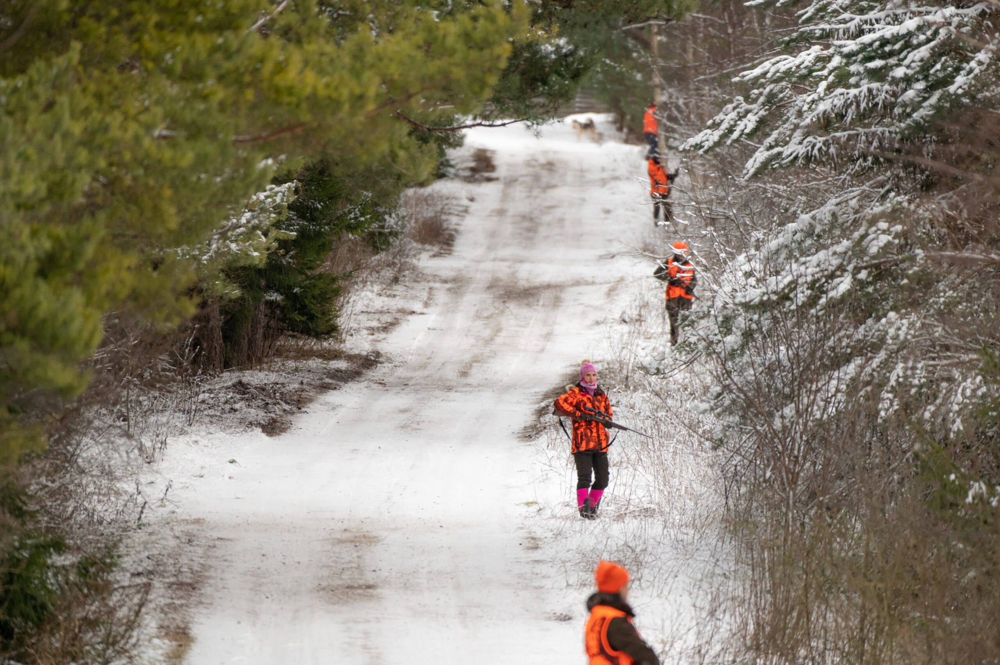
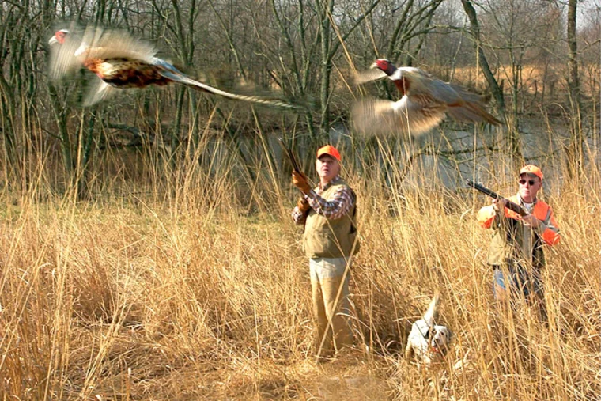

Jahitehnika ja -strateegia ülevaade
Vaikne Lähenemine (Stalking)
See tehnika hõlmab uluki jälitamist vaikselt ja märkamatult, et saavutada laskeulatus ilma looma häirimata.

Varitsusjaht (Ambush Hunting)
Jahimees ootab varjatult, tavaliselt kõrgendikul või puu otsas, uluki möödumist soodsast kohast.

Koertega Jahipidamine
Kasutatakse koeri uluki jälitamiseks ja ajamiseks, et jahimees saaks teha tõhusa lasku.

Ühisjaht
Grupp jahimehi liigub läbi metsa, ajades ulukeid kindlasse suunda, kus teised jahimehed on valmis laskma.

Linnujaht
See nõuab erilisi oskusi ja tehnikaid, et läheneda maandunud linnule või linnuparvele piisavalt lähedale. Peab olema nii lähedal, et kui hakatakse lendama, saab teha kohe tõhusa lasu. Tihti kasutatakse ka koeri.
